Pin it or move it
- Pinned, it sits on the desktop and stays there, even after Win+D.
- Unpin it to move and resize it like any other window.
- Remembers its place, size and scale for each monitor setup, so docking and undocking a laptop just works.
A free, open-source Windows widget that keeps your Google calendars on the desktop, where you can see them at a glance. It stays put when you press Win+D, and remembers its place on every monitor setup.
Download for Windows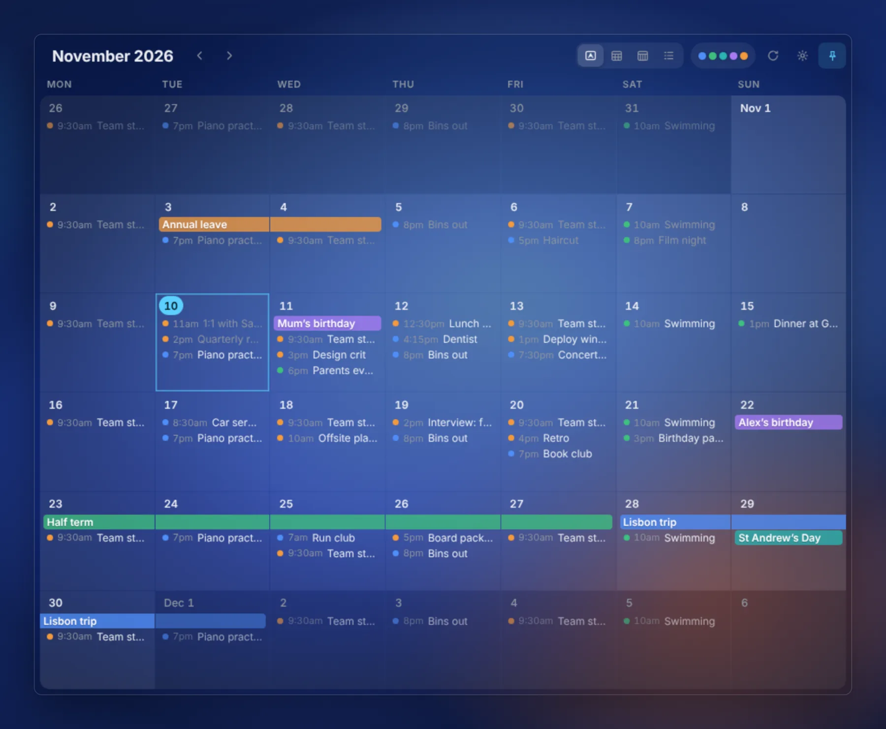
A calendar that lives on the desktop, not in a browser tab.
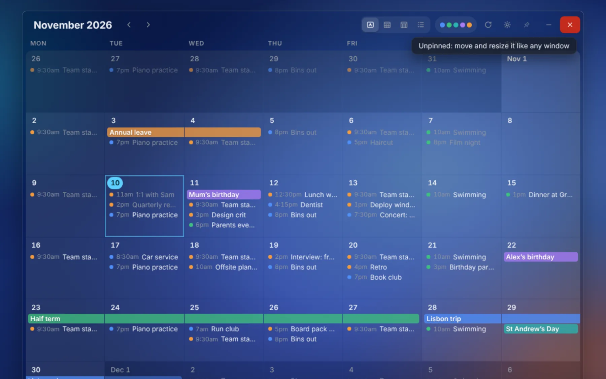
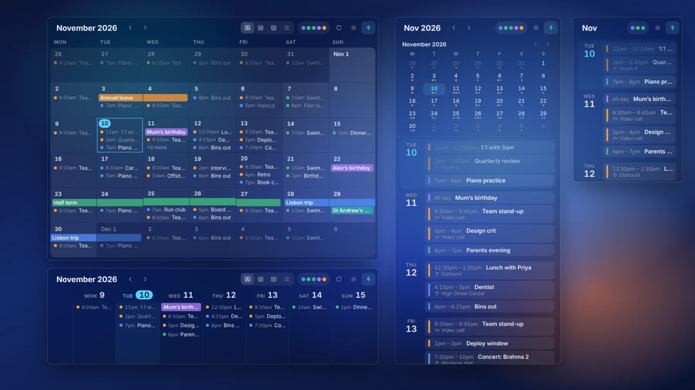
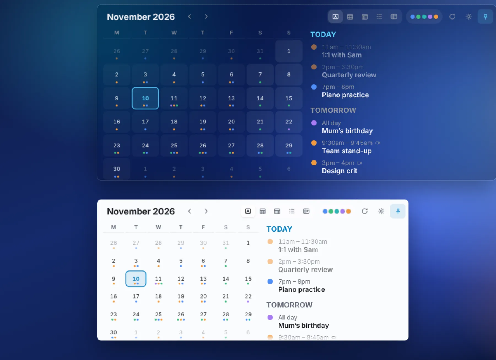
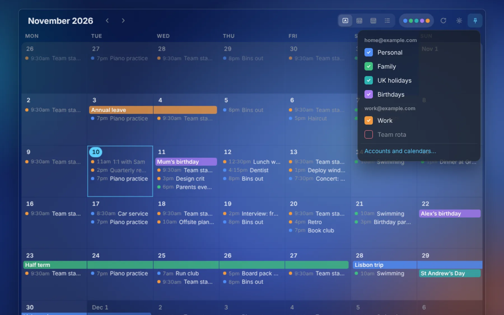
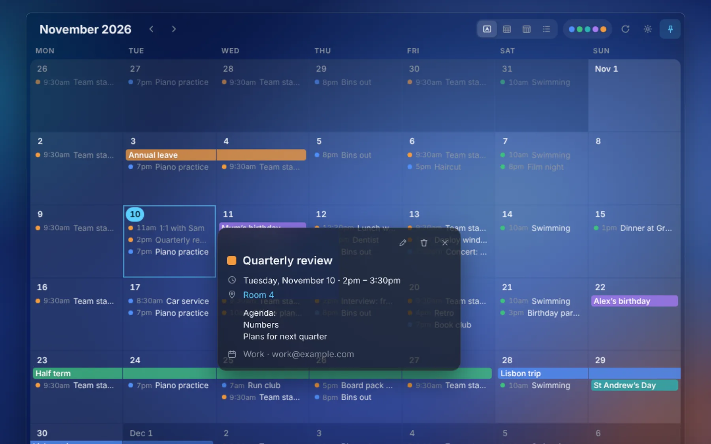
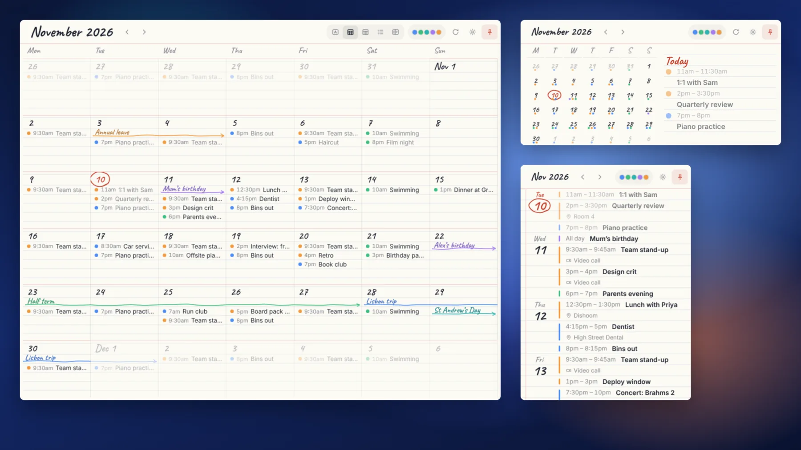
Click any of them to see it full size.
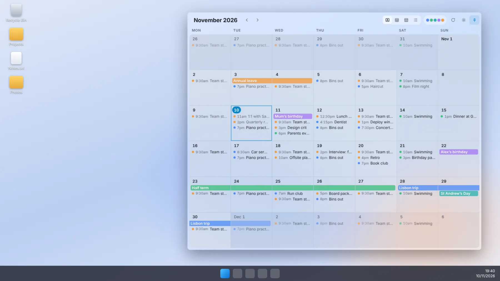
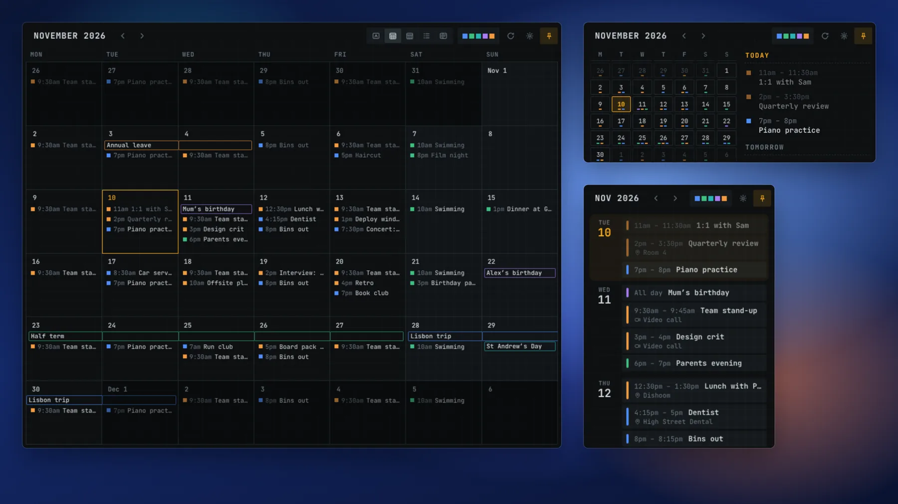
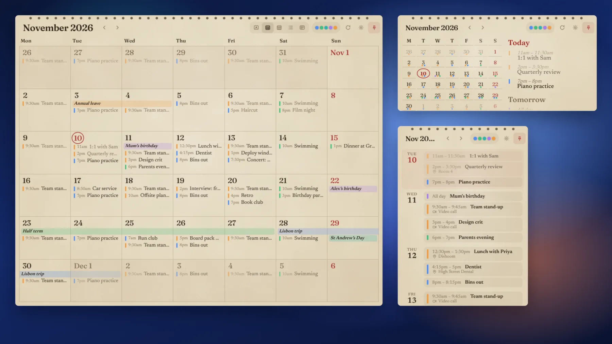
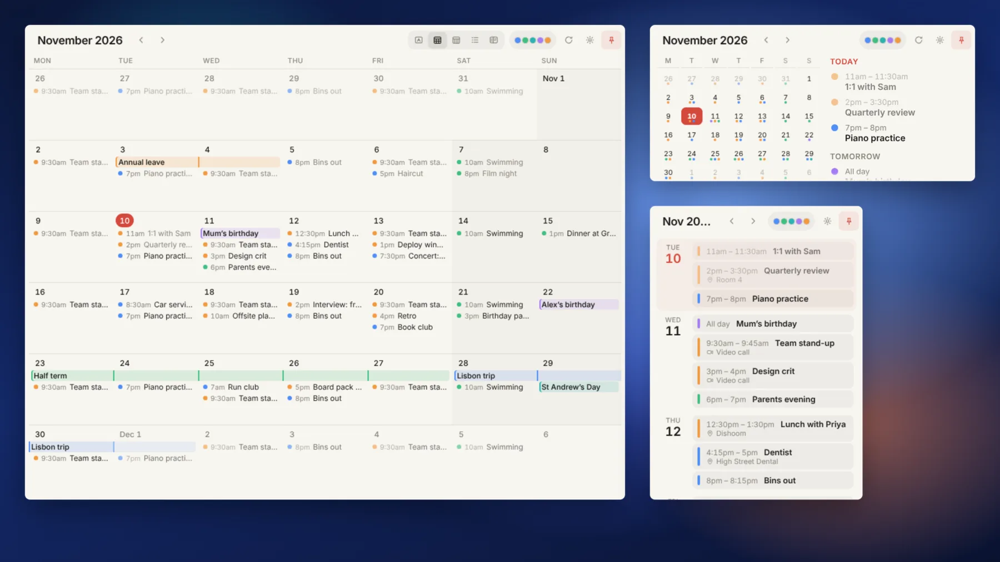
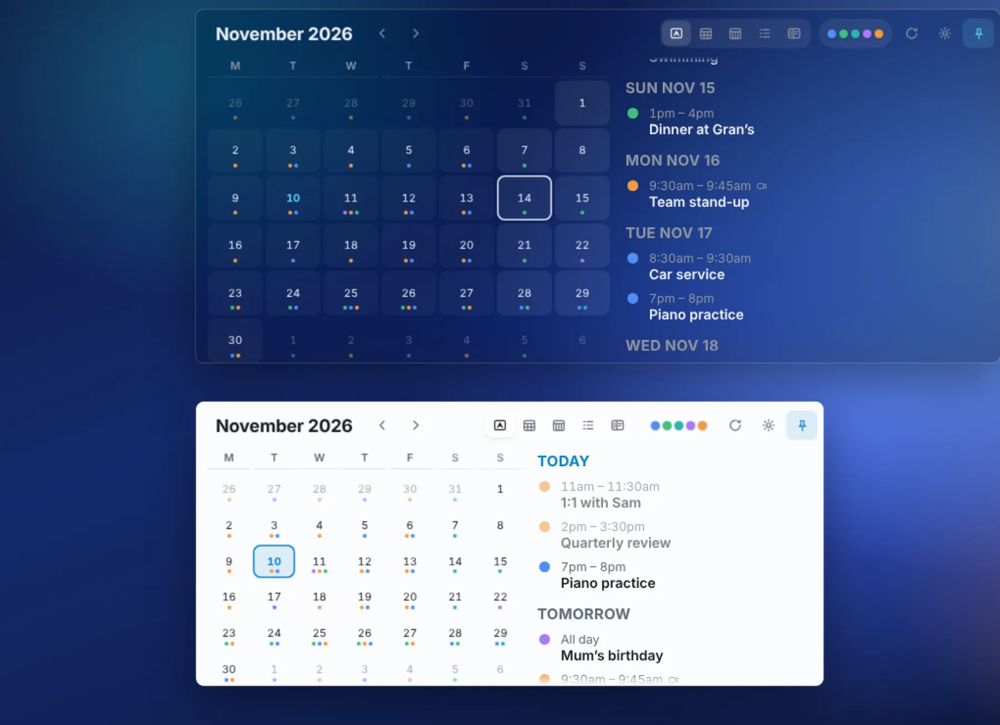
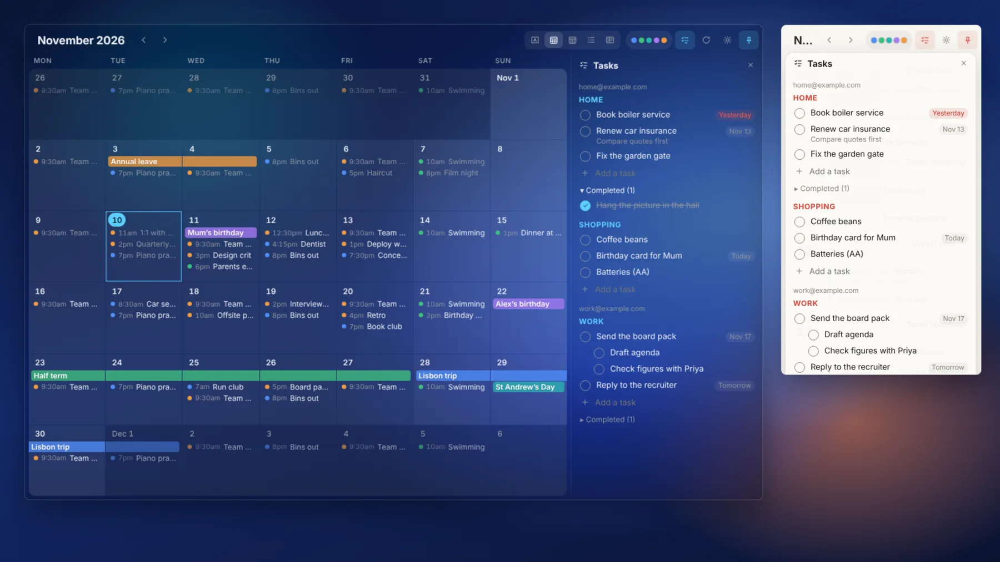
No account with us, no server, nothing collected. Privacy policy.
You sign in with Google in your browser, and WinGCal talks only to Google. There is no WinGCal server in between.
Sign-ins are encrypted with your Windows account. Events are kept on your PC so the widget opens instantly, even offline.
Export every event of every calendar to one JSON file, with everything Google keeps about each one.
Hello, I’m Mat, from London. I’m a music grad, pianist, and a bit of a serious music fan.
I wrote this app primarily for me, but I hope you like it too.
Computer Science was my first degree and I’ve been coding since 1988. But you may have guessed AI tools were involved somewhat in the production of WinGCal’s code. Please don’t let that put you off. I’m a critical and careful user of AI, and value human decisions far more than computer-made ones. And so my approach is this: human-led design and human-checked code.
If something is wrong, or could be improved, please let me know in GitHub Issues.
More about me on my blog, Mat’s Hideout.